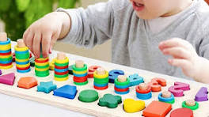

Bienvenidos a los juegos para niños de 0 a 10 años
De acuerdo con Didacti Juegos, empresa especializada en juguetes didácticos y material educativo,
los juguetes didácticos son objetos diseñados para ayudar (a través de entretenimiento y diversión) al desarrollo de los niños.
Su objetivo principal es que los pequeños desarrollen habilidades y conocimientos de forma activa y, sobre todo, divertida.
Con ello conseguirás que tu pequeño:
Estimule su desarrollo físico y mental.
Aumente su autoestima.
Potencie sus capacidades afectivas y sociales.
Se divierta.
Este tipo de juguetes tienen mucha importancia en los primeros años de vida, que es cuando generan más curiosidad de su entorno,
no obstante, puedes encontrar juguetes para diferentes edades, incluso para etapas adultas.
Explora nuestro sitio para descubrir actividades adaptadas
a cada etapa de desarrollo, desde actividades sensoriales
para los más pequeños hasta juegos educativos que desafían
y estimulan las mentes inquisitivas de los niños mayores.
Estamos comprometidos a proporcionar un espacio seguro
y lleno de oportunidades para que los niños exploren,
aprendan y crezcan.
¿Qué Ofrecemos?
A través del juego, los niños aprenden a forjar vínculos con los demás, y a compartir, negociar y resolver conflictos, además de contribuir a su capacidad de autoafirmación. El juego también enseña a los niños aptitudes de liderazgo, además de a relacionarse en grupo.
Juegos Interactivos
Sumérgete en juegos interactivos que estimulan la creatividad y el pensamiento crítico. Desde rompecabezas educativos hasta desafíos lúdicos, cada juego está diseñado para inspirar la exploración y el aprendizaje activo.
Explora cada sección y sumérgete en un viaje educativo lleno de diversión y descubrimientos. En PequeAprendiz, nos esforzamos por ser tu recurso confiable para el crecimiento saludable y el aprendizaje feliz de tus hijos.